DAROM FILM
FESTIVAL
A Film Festival
as a Cultural Snapshot
Branding for the DAROM Film Festival, held in Sderot.
The project includes a visual identity, poster series, website, social media campaign, festival program, and attendee guide.
My experience of the festival was that of a snapshot of Israeli culture: a kind of living document capturing its many layers, nuances, and complexities.
Inspired by this experience, I developed an archival visual identity, transforming a contemporary snapshot of Israeli culture into an extensive visual archive.
As part of the archival approach, I developed an icon system to represent the festival’s different content categories. The system functions as a visual language that supports both the branding and the classification of content across the festival.
Developed within a Branding for Culture course
at Bezalel Academy of Arts and Design.

An Instagram reel presenting the festival.
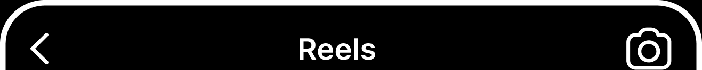
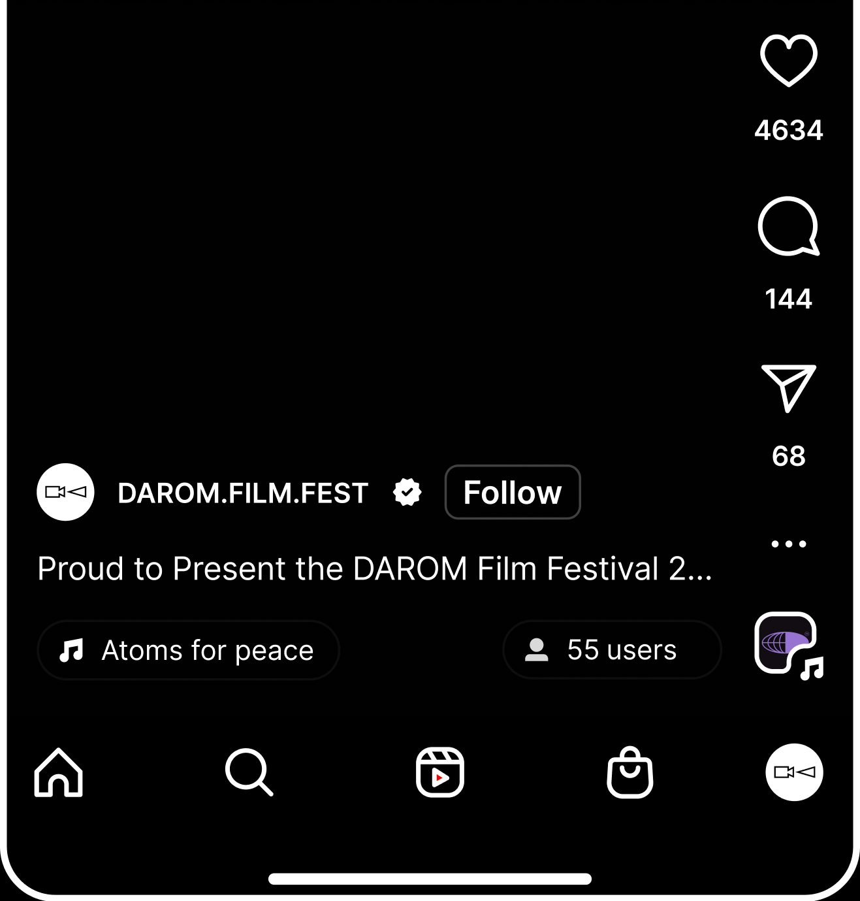
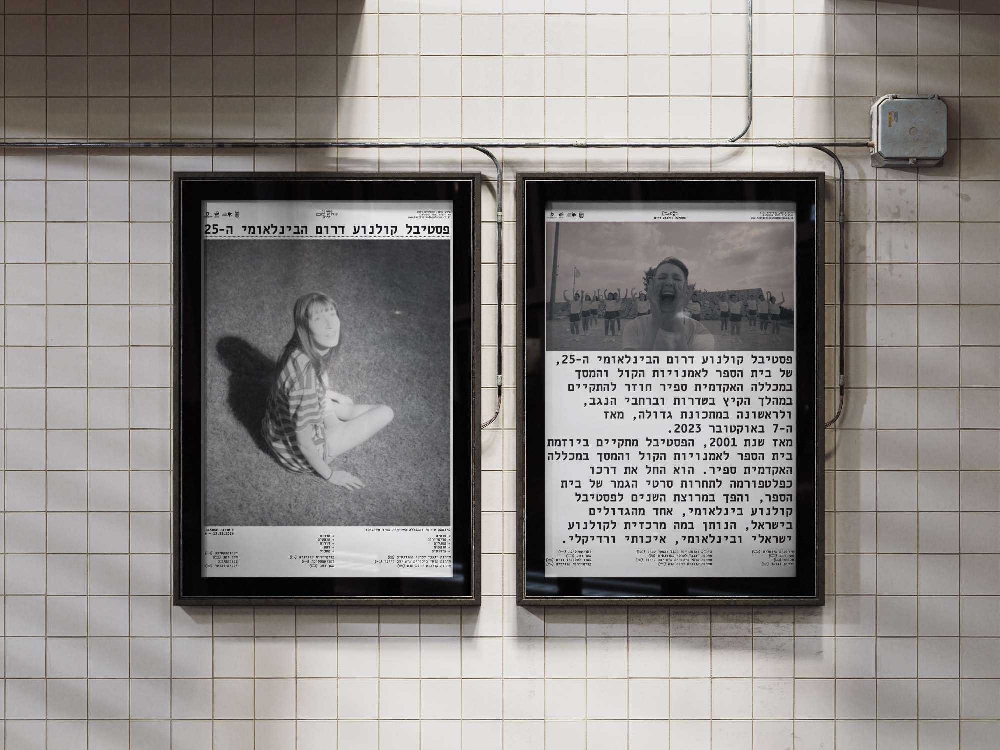
1\4 > The main poster
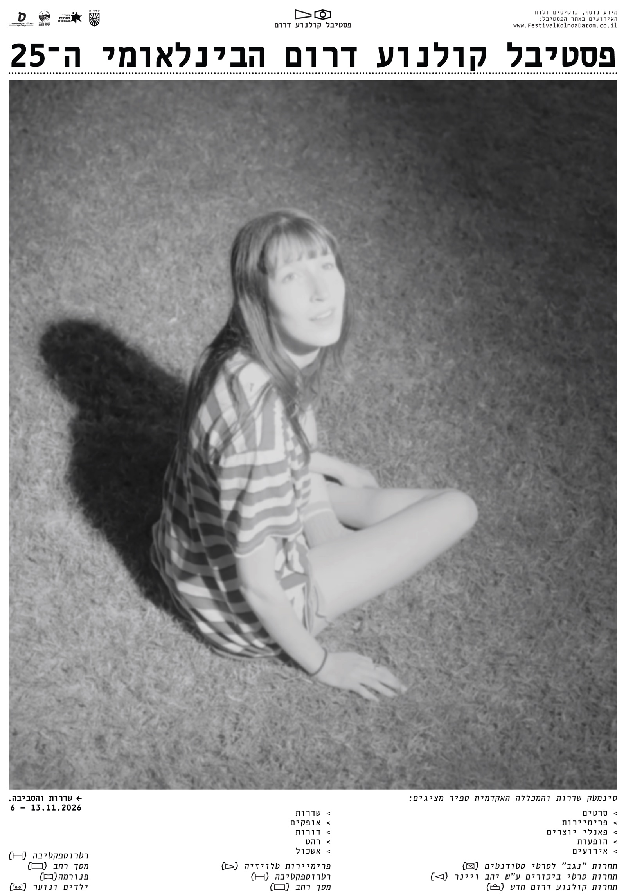
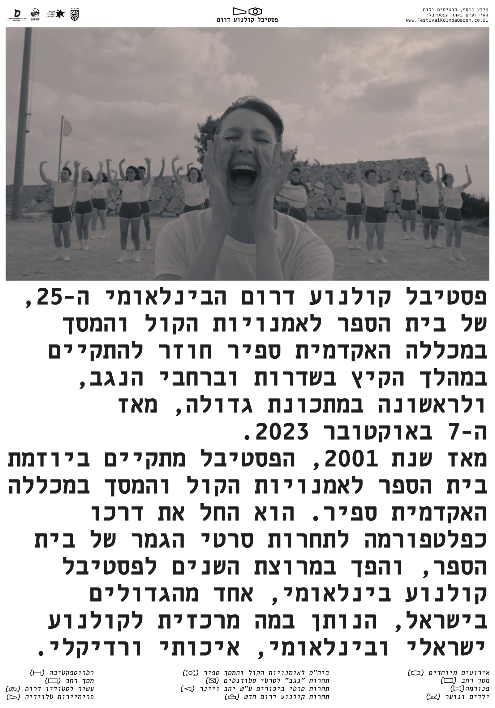
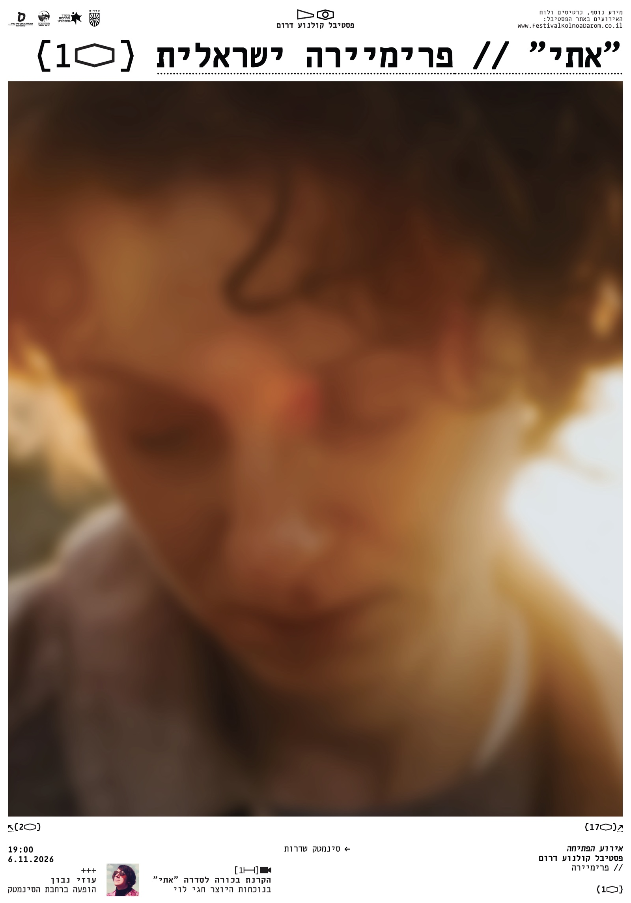
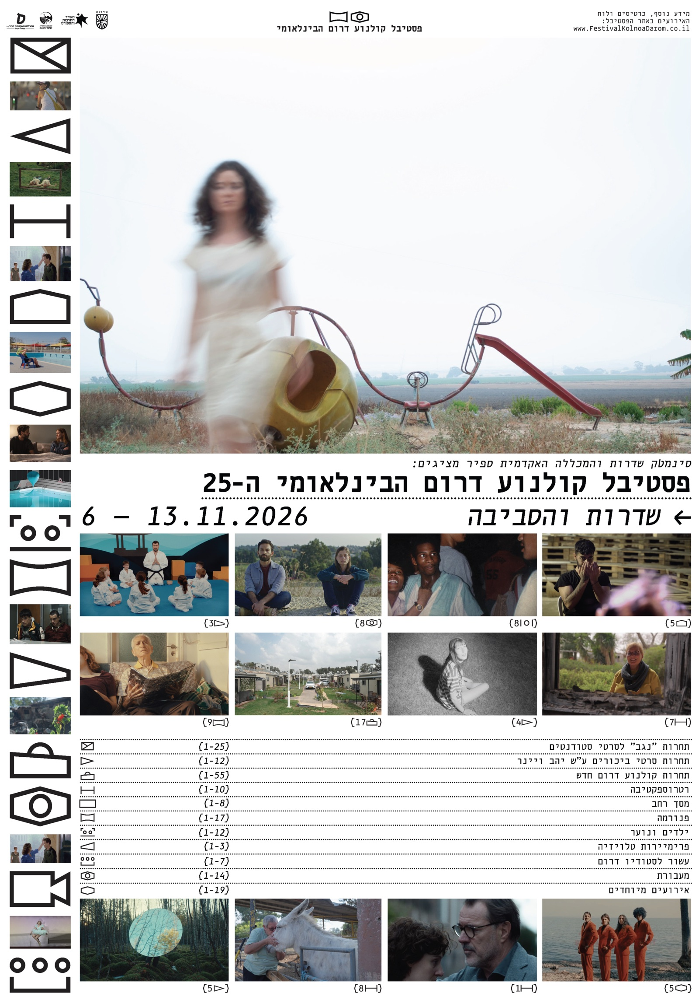
Festival program, schedule and guide, featuring the icon system that categorizes content and guides visitors throughout the festival.
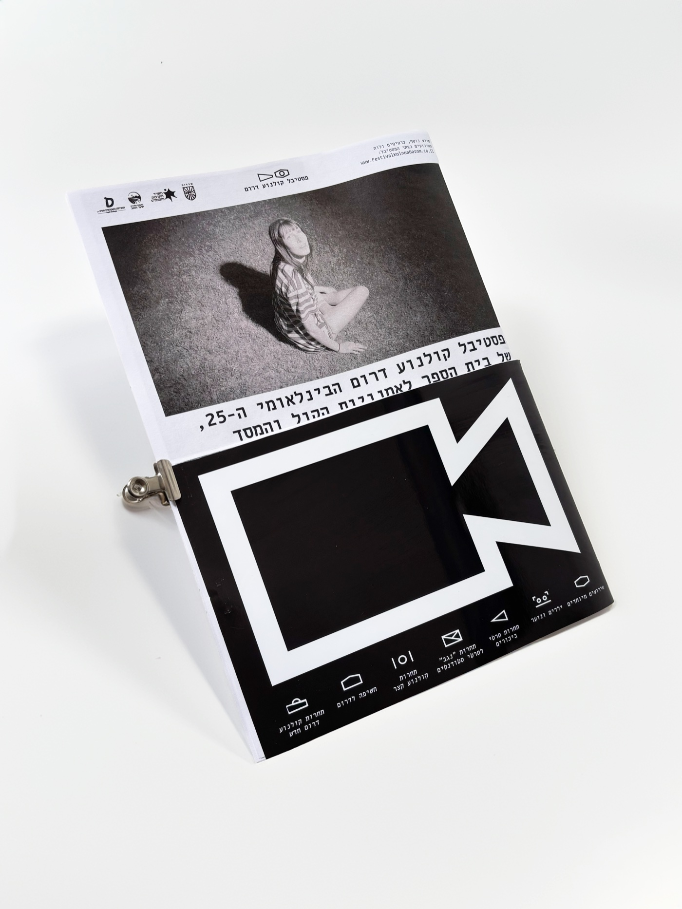
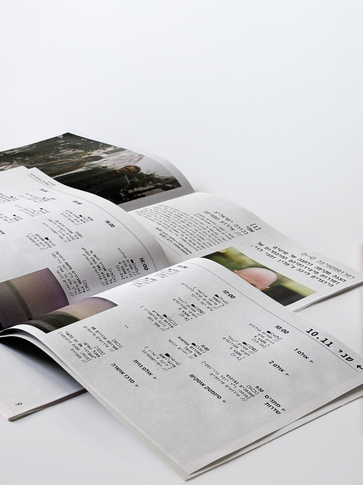
Festival daily schedule and guide.
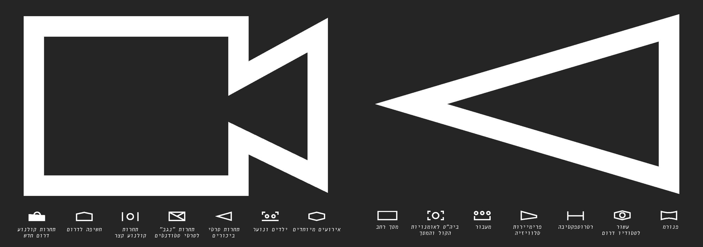
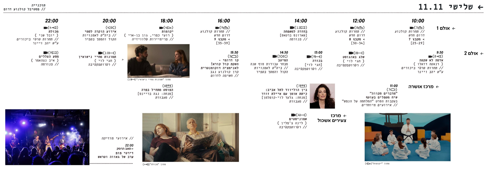
The website provides information on the festival,
screening schedules, program highlights, ticket purchases, and special events.